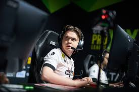
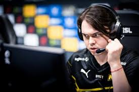

Дени́с Раи́левич Шари́пов[1] (род. 2 сентября 1998, Казань) —
российский киберспортсмен по Counter-Strike 2, выступающий
под никнеймом electroNic[2]. Известен своими выступлениями
за команду Natus Vincere, с которой в 2018 году занял второе
место на чемпионате FACEIT Major: London 2018, а в 2021
выиграл PGL Major Stockholm 2021. С 2018 по 2021 год четыре
раза подряд попадал в рейтинг топ-20 лучших игроков мира по
версии портала HLTV.org, занимая четвёртое, шестое, пятое и
седьмое места соответственно. В 2023 году Шарипов покинул Natus
Vincere, присоединившись к Cloud9. В 2024 году перешёл в Virtus.pro.